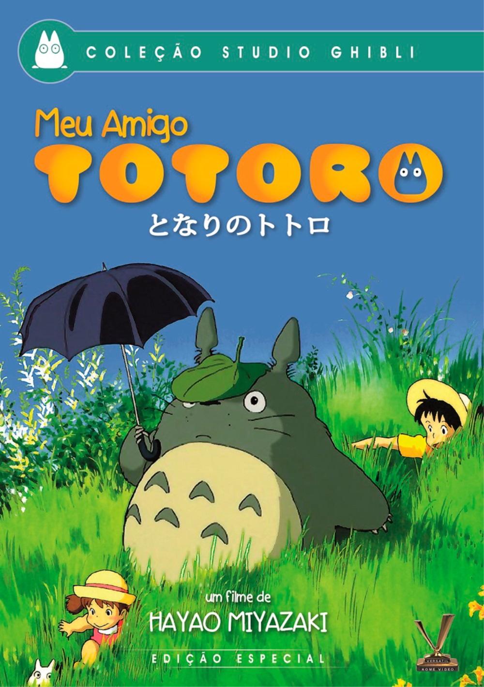

As irmãs Satsuki e Mei se mudam para o campo para ficar mais perto do hospital onde sua mãe está internada. Lá conhecem os Totoros, adoráveis criaturas místicas e alegres, que só podem ser vistas pelas crianças. Com eles, as duas irmãs viverão mágicas aventuras no campo.
alugar